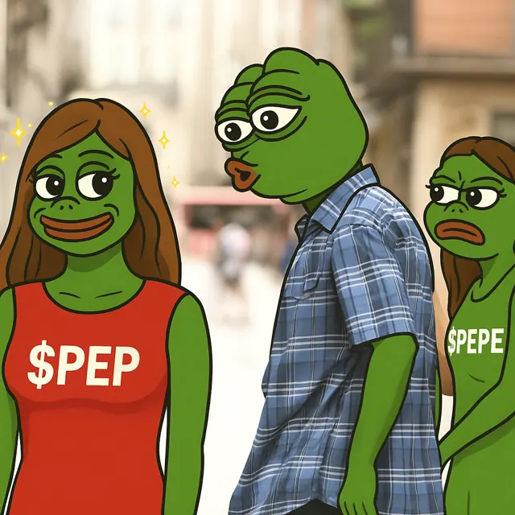
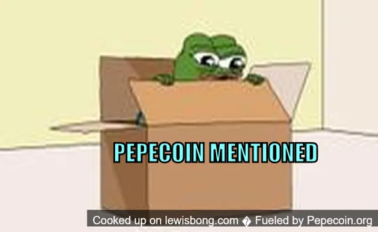

Which Pepecoin is which?
Pepecoin vs Pepe: three frogs, one name.
Short answer: Pepecoin (PEP) is a coin on its own proof-of-work blockchain, merge-mined with Litecoin and Dogecoin. Pepe (PEPE) and PepeCoin (PEPECOIN) are ERC-20 tokens on Ethereum. All three go by some version of the name Pepecoin, and Kraken lists all three. Below: a sourced comparison, freezes and public identity included. No hype.

The big table
Side by side
Scroll sideways on a phone. The PEP column is the green one.

| Ticker | |||
|---|---|---|---|
| Launch allocation | 0% no premine, no pre-allocation, no ICO, no funding round |
6.9% to a team multisig wallet; 93.1% to the liquidity pool |
3.5% premine for a development fund, per the project's own 2016 repository |
| Address | Starts with P | Starts with 0x | Starts with 0x |
| Cost of a transfer | Recommended fee 0.01 PEP per kB, under $0.000001 at the October 2026 price (Pepecoin Core) | Depends on the Ethereum gas price at the moment. See the Etherscan gas tracker | Depends on the Ethereum gas price at the moment. See the Etherscan gas tracker |
| Protocol freeze | No protocol blacklist. Like Bitcoin/Dogecoin UTXO coins, nobody can freeze an arbitrary address at the chain layer. An exchange or custodial wallet can still freeze balances it holds. | Contract has blacklist/transfer rules. Deployer blacklisted one address early, then renounced ownership (owner = zero). New owner-only freezes via Ownable are disabled; that one address stays frozen. | Separate ERC-20. Check that contract’s own admin status; do not assume it matches PEPE. |
| What it is | Its own layer-1 blockchain, a fork of Dogecoin Core | ERC-20 token on Ethereum | ERC-20 token on Ethereum. Ran its own chain from 2016, bridged to Ethereum in 2023 |
| Secured by | Scrypt proof of work, merge-mined with Litecoin and Dogecoin | Ethereum validators (proof of stake) | Ethereum validators today. Originally X11 proof of work, then proof of stake |
| Can you mine it? | Yes, with a Scrypt ASIC on a pool that merge-mines PEP. How to mine PEP | No. A token on Ethereum, which uses proof of stake, is not mined | No, not since it moved to Ethereum |
| Fees paid in | PEP, to the miners of the Pepecoin chain | ETH, as Ethereum gas, even when only PEPE moves | ETH, as Ethereum gas, even when only PEPECOIN moves |
| Account model | UTXO, like Bitcoin and Dogecoin: coins sit in unspent outputs that only the key holder can spend | ERC-20: a balance recorded inside the token's smart contract on Ethereum | ERC-20: a balance recorded inside the token's smart contract on Ethereum |
| Who's behind it | Pepecoin LLC, a registered company that published its own MiCA whitepaper. More | No legal issuer. Created by anonymous developers whose identities are not publicly known (LCX MiCA whitepaper for PEPE, B.2 and D.5) | No verified data |
| Launched | January 30, 2024 | April 2023 | March 2016 |
| Supply | ~104.9 billion, plus 10,000 per block, no cap | 420.69 trillion, fixed | ~107.6 million total supply on Ethereum (max 133.8 million) |
| On Kraken | Since February 11, 2026 | Since May 16, 2023 | Since February 18, 2026 |
Allocation bars share one scale, 0 to 10%.
Admin keys, anyone?
Who can freeze what
PEPE (Ethereum token)
The verified contract includes blacklist logic. Around launch, one address that bought a large amount was blacklisted; ownership was then renounced, so further owner-only blacklist changes via Ownable no longer work. The already-blacklisted balance stays stuck. Many other ERC-20s keep an active owner with pause/blacklist, so always read the contract.
PEP (this chain)
There is no admin key in the protocol that can blacklist your address or stop a signed spend. That is the same model as Bitcoin and Dogecoin. It does not mean you cannot lose coins: wrong network, phishing, or a custodian freezing a deposit still apply.
Sources: PEPE contract on Etherscan 0x6982508145454Ce325dDbE47a25d4ec3d2311933 (renounce transaction); Cointime, May 6, 2023 (one address blacklisted, then ownership renounced); Fairyproof audit, Aug 21, 2023 (blacklist function present, owner is the zero address); Pepecoin Core UTXO design.

Real names, real filings
Public identity (PEP project)
Pepecoin LLC’s MiCA crypto-asset whitepaper (admission to trading) names the offeror’s management body. A Pepecoin co-founder also spoke on the merged-mining panel at Litecoin Summit, Amsterdam, 22–23 June 2026 (Dutch Blockchain Week). That is voluntary public identification and a regulatory filing, not involuntary exposure of private persons.
Sources: MiCA whitepaper; Bitcoin.com announcement; CryptoTimes summit recap (panel participants).
Five-second test
Check an address in five seconds
The first letters tell you which chain you are on. Wrong network, wrong frog.
Pepecoin (PEP). Native coin on its own chain. Check it on pepeplorer.com or pepeblocks.com. Sending PEP to an Ethereum 0x address will not credit the token.
An Ethereum token. Match the contract:
0x6982508145454Ce325dDbE47a25d4ec3d23119330xA9E8aCf069C58aEc8825542845Fd754e41a9489AJust the PEP
Pepecoin (PEP) in numbers
Each line names its source.
- Genesis
- Network live January 30, 2024. The genesis block embeds a Wall Street Journal headline dated January 22, 2024. MiCA whitepaper; chainparams.cpp
- Allocation
- None. Every PEP came from block rewards to miners. Pepecoin LLC holds no PEP. MiCA whitepaper, sections D.9 and G.5
- Mining
- Scrypt proof of work. Merged mining (AuxPoW) with Litecoin and Dogecoin since block 42,000, chain ID 63. chainparams.cpp
- Blocks
- About one every 60 seconds, 10,000 PEP each, no supply cap. MiCA whitepaper, section G.13
- Pools (examples)
- Among others: ViaBTC, AntPool, KuPool, Mining-Dutch, litecoinpool.org, Binance Pool, F2Pool, EMCD. Live list: miningpoolstats. See also rich list pool tags and peppool.space. Pool pages and announcements; miningpoolstats; explorer coinbase
- Supply
- ~104.9 billion PEP per explorers such as Pepeplorer. Aggregators can list less: CoinGecko gave a circulating supply of ~102.7 billion on October 4–5, 2026. Prefer a live explorer with a date. Pepeplorer; CoinGecko, October 4–5, 2026
- Kraken / MiCA
- PEP trading on Kraken from 11 February 2026. MiCA whitepaper for Pepecoin LLC (notification context cited on pepecoin.com: notified April 7, 2026, published May 8, 2026). Geographic availability can differ by region: that is exchange policy and regulation, not a chain feature. Kraken blog; pepecoin.com/mica-whitepaper.xhtml
- Code
- MIT-licensed, public at github.com/pepecoinppc/pepecoin.
Frens keep asking
Common questions
Is Pepecoin (PEP) the same as PEPE?
No. PEPE is an ERC-20 token on Ethereum. Pepecoin (PEP) is a native coin on its own Scrypt proof-of-work blockchain. Check the address prefix: P… vs 0x….
Is PEPE Ethereum based? Does PEP have a contract address?
Yes, Pepe (PEPE) is an ERC-20 token on Ethereum, launched in April 2023. PepeCoin (PEPECOIN) has been an ERC-20 token on Ethereum since 2023 too. Pepecoin (PEP) is not on Ethereum: it is the native coin of its own blockchain, so it has no contract address. A PEP address starts with P.
Is Pepecoin (PEP) related to Rare Pepe?
No. Rare Pepes are collectible Pepe trading cards issued since 2016 as Counterparty assets on Bitcoin. Pepecoin (PEP) is a separate coin on its own Scrypt blockchain, launched in 2024.
Which wallet do I need?
For PEP, a wallet that supports the Pepecoin network: the official Pepecoin Core, a Tangem card, or the others in our wallet guide. PEPE and PEPECOIN are Ethereum tokens, so they live in Ethereum wallets such as MetaMask, which is built for Ethereum-type networks and does not list Pepecoin.
Can someone freeze my PEP on the protocol?
No protocol admin blacklist. Custodians (exchanges, hosted wallets) can still freeze balances they hold. PEPE’s Ethereum contract is a different story: see “Who can freeze what” above.
Why might Kraken show geographic restrictions?
Exchange policy and regulation (including MiCA in the EEA), not a Pepecoin consensus rule.
How do I verify the ticker when withdrawing?
Pick Pepecoin (PEP) on the Pepecoin network. A PEP address starts with P. PEPE and PEPECOIN are Ethereum tokens; their addresses start with 0x and live on a different network. See the address check above.
What if I send to the wrong network?
Wrong-network sends are usually irreversible. PEP on the Pepecoin chain and PEPE on Ethereum are not interchangeable. Always match ticker, network, and address format before sending. Check PEP transfers on PepeBlocks or Pepeplorer; check Ethereum tokens on Etherscan.
Why might CoinMarketCap show a different supply than explorers?
Explorers such as Pepeplorer show about 104.9 billion PEP. Aggregators can list less: CoinGecko gave a circulating supply of about 102.7 billion on October 4–5, 2026. Prefer a live explorer with a date. See “Pepecoin (PEP) in numbers” above.
Does a rich-list address equal one person?
No. An address is not a person: exchanges and custodians hold coins for many users. See the rich list notes.
Receipts
Sources
PEP · Pepecoin
- MiCA whitepaper
- chainparams.cpp (AuxPoW, genesis)
- Pepeplorer network stats
- Kraken listing, Feb 2026
- Litecoin Summit (Bitcoin.com)
- Litecoin Summit recap (CryptoTimes)
- ViaBTC on PEP merged mining
- peppool.space mining pools
- miningpoolstats: Pepecoin pools
- Mining-Dutch: Pepecoin pool, paid in PEP
- AntPool adds PEP merged mining, Dec 2024 (Ultramining)
- KuPool: coin list with PEP
- CoinGecko: Pepecoin (supply snapshot, Oct 4–5, 2026)
- Pepecoin Core (UTXO model, fees in PEP)
- Tangem: Pepecoin support
PEPECOIN · PepeCoin / Memetic
PEPE · Pepe
Ethereum tokens in general
“No protocol freeze” is not a guarantee against scams, wrong-network sends, or custodial freezes.